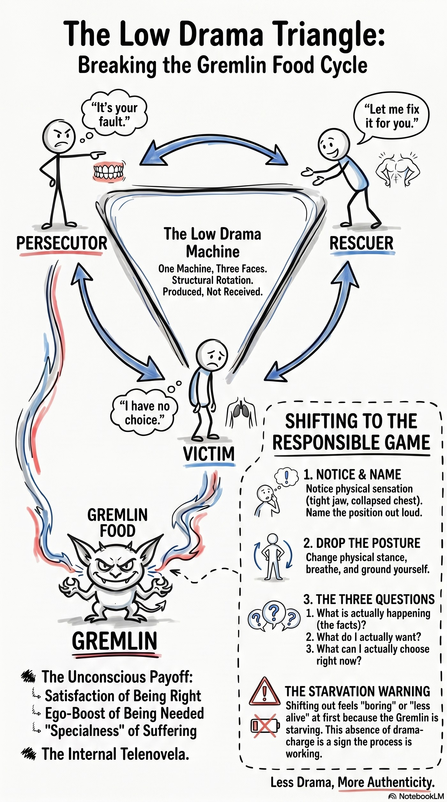

Possibility Management · Infographic
Low Drama
Three drama positions — Persecutor, Victim, Rescuer — that look like three different people but are one Box-pattern rotating through three faces, producing gremlin food.
Three drama positions — Persecutor, Victim, Rescuer — that look like three different people but are one Box-pattern rotating through three faces, producing gremlin food.

What it is. Three positions a person rotates through whenever they produce drama: Persecutor ("it's your fault"), Victim ("I have no choice"), Rescuer ("let me fix it for you"). Not three personality types — three faces of one Box-pattern, and the same person flips between them inside a single conversation. The triangle also names what the drama is for: gremlin food. Load-bearing claim — low drama is produced, not received. You are in it because something in you eats what the position generates.
At a glance. Persecutor → attacks, blames, makes wrong · Victim → collapses, declares helplessness, controls through misery · Rescuer → steps in unasked, builds dependency. Rotation is structural — Rescuer unappreciated becomes Persecutor, Persecutor challenged collapses to Victim. All three feed gremlin food. Distinct from Karpman → same shape, but the mechanism is gremlin-food production, not "dysfunction," so the exit differs. The move out → the Responsible Game: notice, name, step out, ask what is happening / what I want / what I can choose. It feels less alive at first because the gremlin is starving.
The Low Drama Triangle is three positions one person rotates through: Persecutor, who says it is your fault; Victim, who says I have no choice; and Rescuer, who jumps in unasked to fix you. They look like three people but they are one Box-pattern in three costumes, and the same person flips between them inside a single conversation. A Rescuer who goes unappreciated becomes a Persecutor; a Persecutor who gets challenged collapses into Victim. The triangle also names what it is all for: gremlin food. Low drama is produced, not received. You are in it because something in you eats what the position generates.
If you only remember one thing: three costumes, one machine, and you are wearing it because something in you is feeding on the drama.